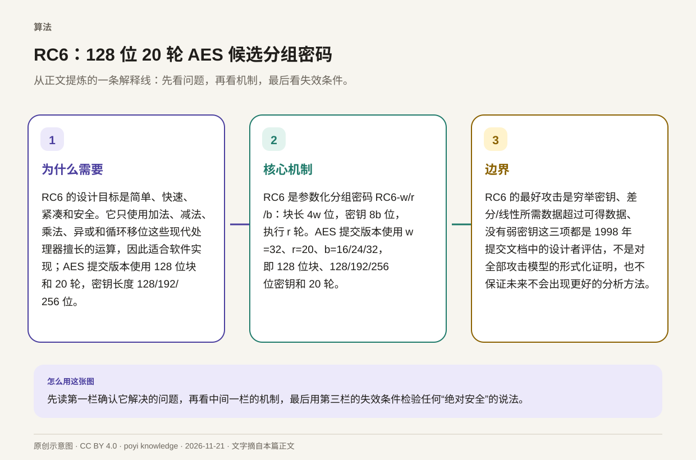
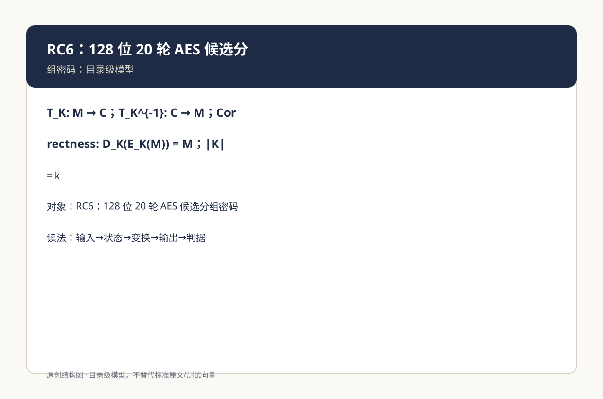

原理与机制
算法：RC6 分组密码（RC6）。RC6 是参数化分组密码 RC6-w/r/b：块长 4w 位，密钥 8b 位，执行 r 轮。AES 提交版本使用 w=32、r=20、b=16/24/32，即 128 位块、128/192/256 位密钥和 20 轮。128 位块分成四个 32 位寄存器 A、B、C、D。加密先做两次预白化，再执行 20 轮，最后做两次后白化：
B = B + S[0]
D = D + S[1]
for i = 1..20:
t = (B * (2B + 1)) <<< 5
u = (D * (2D + 1)) <<< 5
A = ((A XOR t) <<< u) + S[2i]
C = ((C XOR u) <<< t) + S[2i+1]
(A, B, C, D) = (B, C, D, A)
A = A + S[42]
C = C + S[43]
这里的乘法和加法都是模 2^32，<<< 是 32 位循环左移，旋转量取低 5 位。每轮先由 B、D 算出 t、u，再用它们旋转 A、C 并加上轮密钥，最后把四个寄存器整体左移一位。```text
C = C - S[43]
A = A - S[42]
for i = 20..1:
(A, B, C, D) = (D, A, B, C)
u = (D * (2D + 1)) <<< 5
t = (B * (2B + 1)) <<< 5
C = ((C - S[2i+1]) >>> t) XOR u
A = ((A - S[2i]) >>> u) XOR t
B = B - S[0]
D = D - S[1]
密钥调度把用户密钥按小端序装成 c 个 32 位字 L，然后生成 2r+4=44 个 S 字：
```text
S[0] = P = 0xB7E15163
S[i] = S[i-1] + Q // Q = 0x9E3779B9
A = B = i = j = 0
for s = 1..3*max(c, 2r+4):
A = S[i] = (S[i] + A + B) <<< 3
B = L[j] = (L[j] + A + B) <<< ((A + B) mod 32)
i = (i + 1) mod (2r+4)
j = (j + 1) mod c
AES 版本 c=4/6/8、2r+4=44，因此混合次数是 132。P 和 Q 来自自然常数 e 和黄金比例。用户密钥的字节顺序与数据相同：第一个密钥字节进入 L[0] 的最低有效字节，后续字节依次填充。RC6 的字节序是小端：第一个明文字节放入 A 的最低有效字节，最后一个明文字节放入 D 的最高有效字节。实现时如果按大端解析 128 位块，会得到完全不同的结果。本文的实现显式按小端装入四个 32 位寄存器，并在输出时按同样顺序写回。

为什么重要
RC6 的设计目标是简单、快速、紧凑和安全。它只使用加法、减法、乘法、异或和循环移位这些现代处理器擅长的运算，因此适合软件实现；AES 提交版本使用 128 位块和 20 轮，密钥长度 128/192/256 位。RC6 提交文档第 6 节总结说：目前最好的攻击似乎是穷举密钥；差分和线性分析所需的数据量超过可获得的明文量；没有已知的弱密钥。这些是 1998 年设计者的评估，不是对全部攻击模型的形式化证明。RC6 在 1998 年作为 AES 候选算法提交，AES 版本使用 128 位块和 20 轮。2018 年的 IETF 草案说明 RC6 是 AES 最终候选者之一，相关专利已经过期，但 RC6 名称仍是商标。
应用与实例
RC6 提交文档附录给出六组向量，覆盖 128/192/256 位密钥和零/非零明文：
K = 00000000000000000000000000000000
M = 00000000000000000000000000000000
C = 8FC3A53656B1F778C129DF4E9848A41E
K = 0123456789ABCDEF0112233445566778
M = 02132435465768798A9BACBDCEDFE0F1
C = 524E192F4715C6231F51F6367EA43F18
K = 000000000000000000000000000000000000000000000000
M = 00000000000000000000000000000000
C = 6CD61BCB190B30384E8A3F168690AE82
K = 0123456789ABCDEF0112233445566778899AABBCCDDEEFF0
M = 02132435465768798A9BACBDCEDFE0F1
C = 688329D019E505041E52E92AF95291D4
K = 0000000000000000000000000000000000000000000000000000000000000000
M = 00000000000000000000000000000000
C = 8F5FBD0510D15FA893FA3FDA6E857EC2
K = 0123456789ABCDEF0112233445566778899AABBCCDDEEFF01032547698BADCFE
M = 02132435465768798A9BACBDCEDFE0F1
C = C8241816F0D7E48920AD16A1674E5D48
2018 年 4 月的 IETF 草案 draft-krovetz-rc6-rc5-vectors-00 还给出 RC6-32/20/16 的独立向量：密钥和明文都是 000102030405060708090A0B0C0D0E0F，密文是 3A96F9C7F6755CFE46F00E3DCD5D2A3C。它与提交文档的六组向量互为交叉校验。本文按提交文档的密钥调度为 128 位全零密钥算出 S[0..3]=2A66311C、9B17852D、8108B207、39D14185，S[42..43]=05B4016A、4B38AC83。这些中间值不是提交文档直接列出的，而是由 P、Q 和混合规则计算，并由六组向量间接验证。

边界与攻击面
RC6 的最好攻击是穷举密钥、差分/线性所需数据超过可得数据、没有弱密钥这三项都是 1998 年提交文档中的设计者评估，不是对全部攻击模型的形式化证明，也不保证未来不会出现更好的分析方法。本文不把它们扩大成绝对安全结论，也不引用未经本文核实的攻击论文来宣称 RC6 已被攻破。提交文档第 6 节说 RC6 可以安排成加密/解密时间与数据无关，从而抵抗某些时序攻击。这是对实现方式的建议，不保证所有处理器、编译器和实现都自动获得常量时间行为；本文的教学实现也不是常量时间实现。RC6 的部署位置需要区分：它是 1998 年提交给 AES 的候选算法，2018 年 IETF 草案说明相关专利已过期、名称仍是商标；AES 的最终标准是 NIST 于 2001 年 11 月 26 日发布的 FIPS 197，RC6 没有成为 AES。把 AES 候选者当成 AES 标准是不准确的。实现层面，本文的教学实现按 32 位字做乘法和循环移位，不是常量时间实现，缓存和时序可能泄露与密钥相关的访问模式；它不生成密钥，不实现工作模式、IV 管理、填充、完整性保护或侧信道防护，不能用于保护真实数据。RC6 只定义分组密码，协议层必须自己处理这些事项。
历史与背景
RC6 提交文档的版本是 v1.1（1998 年 8 月 20 日），由 R.L.Rivest、M.J.B.Robshaw、R.Sidney 和 Y.L.Yin 署名，作为 AES 候选算法提交。AES 版本使用 128 位块、128/192/256 位密钥和 20 轮。2018 年 4 月的 IETF 草案 draft-krovetz-rc6-rc5-vectors-00 说明 RC6 是 AES 最终候选者之一，相关专利已经过期，但 RC6 名称仍是商标。该草案提供 RC6/RC5 的多参数测试向量，本文用它给出的 RC6-32/20/16 向量做独立交叉校验。本文的 RC6 实体只指这一种 128 位块、20 轮的 AES 候选分组密码；RC5 是另一种参数化分组密码，AES 是最终标准 FIPS 197（NIST 于 2001 年 11 月 26 日发布），二者都不是 RC6 的别名或被本文完成的实体。
逐步示例与核验
复算示例
取标准或公开测试向量中的一组参数，按“输入—执行—输出”记录：先写出该条目的形式式 (C=E_K(P;r),\qquad P=D_K(C))；再按规范顺序执行每一步，最后把输出与独立实现或标准向量逐字节对照。若没有可引用的数值向量，就只记录结构步骤，不伪造输出。
参考出处
- Wikipedia search entry for RC6 分组密码. https://zh.wikipedia.org/w/index.php?search=RC6%20%E5%88%86%E7%BB%84%E5%AF%86%E7%A0%81
- Handbook of Applied Cryptography (Menezes, van Oorschot, Vanstone). https://www.cacr.math.uwaterloo.ca/hac/